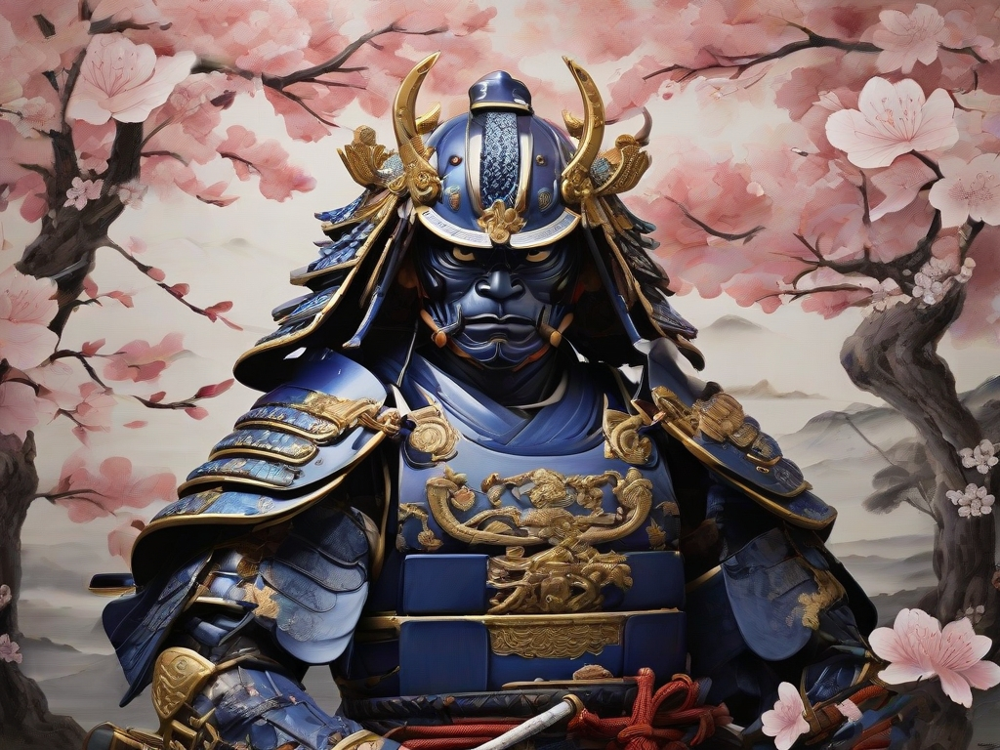

envision a resolute samurai clad in a lacquered, indigo-blue armor adorned with intricate gold accents. The helmet, or kabuto, features a menacing facial plate, symbolizing fierce determination. The silk cords of the armor hang gracefully, while the family crest, an emblem of honor, is proudly displayed.The katana at the samurai's side bears the marks of countless battles, its blade gleaming with a razor-sharp edge. Worn leather wraps the hilt, telling stories of valor and sacrifice. A crimson silk tsuka-ito contrasts the muted hues, hinting at the warrior's martial prowess.The samurai's stoic expression reveals discipline and unwavering commitment. His eyes, sharp and focused, reflect the code of bushido. A white silk undershirt peeks through the armor, symbolizing purity within the warrior's soul.Amidst the tranquility of cherry blossoms, this Kamakura-era samurai stands poised, embodying the harmony between strength and grace, a living testament to the era's martial spirit.

Description for Photo 2

Description for Photo 3

Description for Photo 4